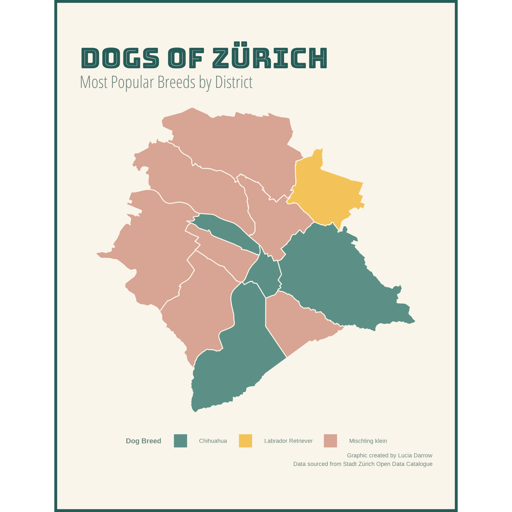
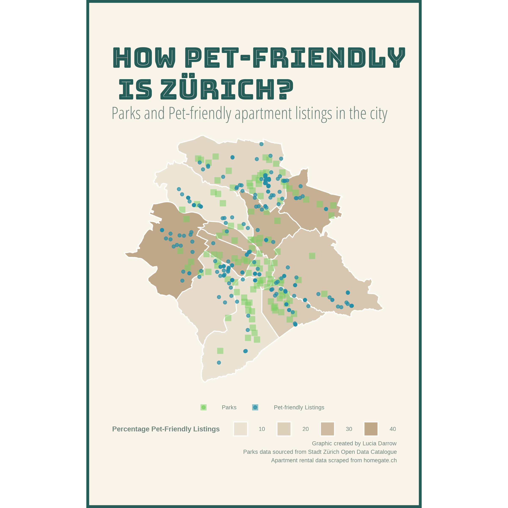

For the past few years, I’ve been interested in adopting a dog, but struggled to find an apartment that would allow one in Canada. At the end of May, I relocated from Vancouver, BC to Zürich, Switzerland. With its high-quality of living and access to nature, Zürich seems like an ideal place to live with a dog. So, how pet-friendly is the city of Zürich? In this post, I’ll explore data provided by the city and scraped from apartment rental sites to see which neighborhoods are the most pet-friendly.
In a city with a population of approximately 400,000, there are just over 8,500 registered dogs (according to 2021 data). Publicly available data through the Stadt Zürich Open Data portal provides the id, age, and breed of the dog, in addition to information on its owner, including their district of residence. We can use this information to better understand which areas of the city may be best for pet owners to find an apartment.
Let’s start by taking a look at the most popular breeds in the city. Zürich classifies dog breeds into three categories:
| City District | I | K | II | Total Registered Dogs |
|---|---|---|---|---|
| Kreis 1 | 48 | 82 | 0 | 130 |
| Kreis 2 | 354 | 480 | 0 | 834 |
| Kreis 3 | 323 | 441 | 1 | 765 |
| Kreis 4 | 141 | 307 | 0 | 448 |
| Kreis 5 | 107 | 182 | 1 | 290 |
| Kreis 6 | 267 | 329 | 0 | 596 |
| Kreis 7 | 549 | 618 | 1 | 1168 |
| Kreis 8 | 186 | 274 | 1 | 461 |
| Kreis 9 | 384 | 679 | 1 | 1064 |
| Kreis 10 | 335 | 422 | 1 | 758 |
| Kreis 11 | 492 | 940 | 1 | 1433 |
| Kreis 12 | 201 | 416 | 1 | 618 |
This tables indicates that there are more dog owners residing in outer districts like Kreis 7 and Kreis 11, than in inner city districts. This could be simply due to the higher population in these areas. Overall, we can see that small breeds (Type K) are more common across all districts. There are only a handful of the restricted breeds (Type II) found in the city. Next, let’s take a closer look at the most popular breed by district.

As expected, small breeds like the Chihuahua and mixed small breeds are most popular in the majority of districts. Interestingly, the Labrador Retriever is most popular in Kreis 7, which may indicate a more active lifestyle in this area.
Renting is very common in Switzerland, with around 9 out of 10 people renting rather than owning property in Swiss cities. Zürich is certainly no exception. One of the most popular real estate websites in Switzerland is homegate.ch. Advertisers can choose to include whether or not their property listing is pet-friendly. In June 2021, I scraped the current 970 rental listings on homegate within the city of Zürich. The table below shows the count of listings split by city district and whether or not they are pet friendly.
| City District | Count of Pet-Friendly Listings | Count of Other Listings | Percentage Pet-Friendly |
|---|---|---|---|
| Kreis 1 | 12 | 37 | 24.49% |
| Kreis 2 | 11 | 57 | 16.18% |
| Kreis 3 | 31 | 46 | 40.26% |
| Kreis 4 | 10 | 90 | 10.00% |
| Kreis 5 | 2 | 21 | 8.70% |
| Kreis 6 | 10 | 63 | 13.70% |
| Kreis 7 | 31 | 55 | 36.05% |
| Kreis 8 | 21 | 39 | 35.00% |
| Kreis 9 | 24 | 83 | 22.43% |
| Kreis 10 | 21 | 41 | 33.87% |
| Kreis 11 | 65 | 150 | 30.23% |
| Kreis 12 | 8 | 42 | 16.00% |
This provides a more complete picture of pet-friendliness that the dog count table above as we start to get a sense of pets relative to total population in each district. We can also view this information graphically. In addition to showing the pet-friendly listings in each district, the plot below also shows the locations of parks across the city.

Based on these results, it’s looks like districts 3, 7 and 11 are all great places to start a search for a pet-friendly apartment. They boast both a high dog population and a large percentage of pet-friendly rentals.
Futher analysis could look into the number of pet resources in each of these districts, including features such as number of veterinarians, dog-walkers and pet friendly restaurants or shops.